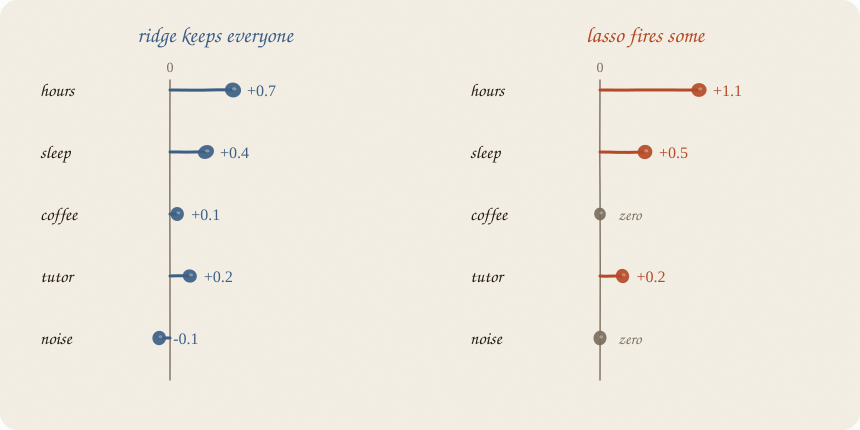
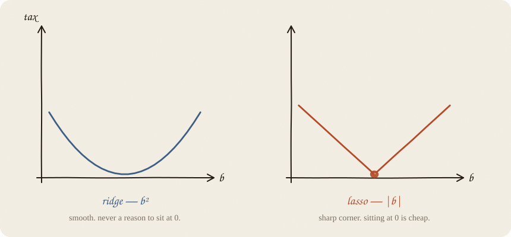
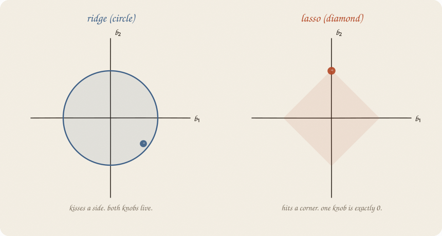
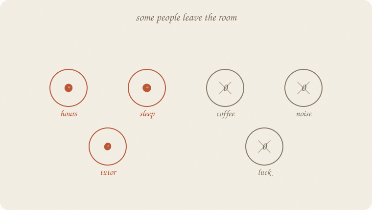
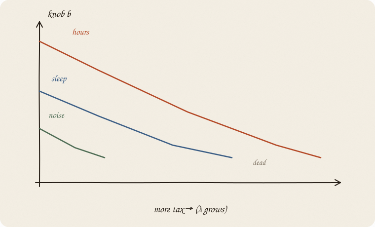
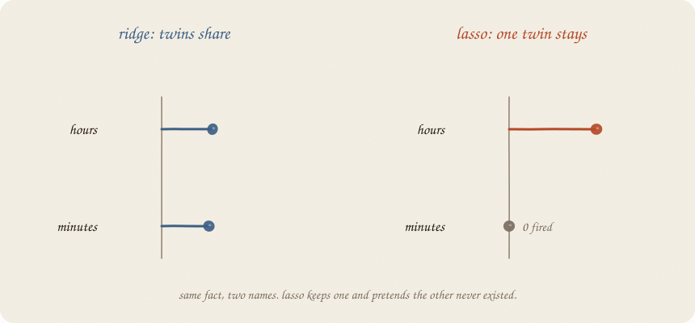
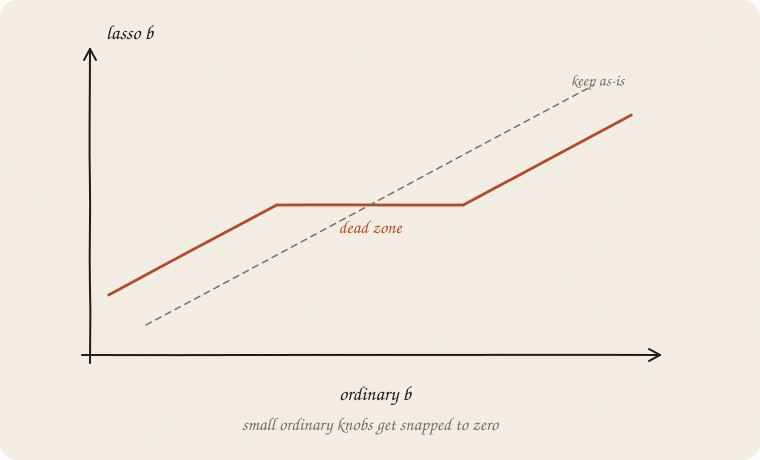
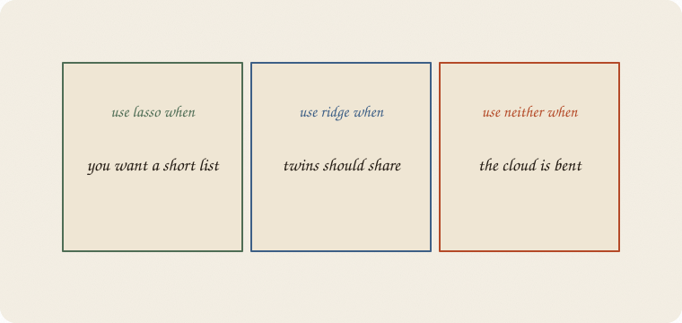

datazines · a sketchbook

Read 01 linear regression then 02 ridge regression. This is the sibling ridge almost introduced: the one that fires people.
Flip it like a notebook. One page = one idea. Done.
Ridge’s personality: turn the volume down. Nobody leaves.
Hours, sleep, coffee, tutor, noise — all still in the model, just quieter.
Sometimes you do not want quieter.
You want shorter.
A grade model with 40 levers is a pain to read. A grade model with 3 levers is a sentence:
grade ≈ hours + sleep + tutor
That is lasso’s job. Not a new shape of line. A haircut.
Still:
$$\hat y = a + b_1 x_1 + b_2 x_2 + \cdots$$
Still: make residuals small.
Ridge added:
λ × (knobs)²
Lasso adds:
λ × |knobs|
Absolute value. The size, not the square.

The ridge tax is a smooth U. Near zero it is almost flat. There is never a special reason to sit exactly at 0. So knobs shrink and linger.
The lasso tax is a V. A sharp corner at zero. Sitting at 0 is cheap, and leaving 0 has a real first step of cost. So some knobs die.
Same λ idea: louder tax → more death.
Two knobs on the page. Ridge’s fence was a circle around zero. Lasso’s fence is a diamond.

The ordinary “best” still lives somewhere out in the residual rings.
The allowed region is now a diamond. Best allowed point = where a ring kisses the diamond.
Circles get kissed on a side. Both knobs stay alive.
Diamonds often get kissed on a corner. A corner means one knob is exactly 0.
That is the whole trick, as a picture. Corners create zeros.
After lasso, the roster looks different.

Hours: stays.
Sleep: stays.
Tutor: stays.
Coffee, luck, noise: 0. Gone from the sentence.
Not “tiny.” Zero. You can drop the column.
Ridge never gives you that gift. Lasso’s whole personality is that gift.
Start with λ = 0. Ordinary line. Everyone in, drama allowed.
Turn λ up. Watch the knobs.

Noise dies first. Then maybe coffee. Hours hangs on the longest.
This drawing is a lasso path. One picture of “who matters,” in order.
You still pick λ the ridge way: hide people, score the hidden ones, find the sweet spot. The path is how you see what that λ is doing.
Hours studied and minutes studied. Same fact, two names.
Ridge: they share the job. Two modest knobs.
Lasso: often keeps one and fires the other.

The leftover after “hours” is already explained. Minutes has nothing new to say. The diamond is happy to park minutes at a corner.
So: lasso is a great shortlist tool.
It is a shaky fairness tool when x are copies of each other. The one that survives is a bit of luck (who was scaled how, tiny noise). Do not write a story about why hours won and minutes lost.
Another way to feel it. Compare ordinary b to lasso b.

Small ordinary knobs fall in a dead zone and get snapped to 0.
Big ones survive, a bit shrunken.
People call this soft thresholding when there is one x (or when the x are not tangled). Fancy name. Picture: a gap around zero that eats weak signals.
That is why lasso is both a shrinker and a selector.
Same warning as ridge, louder.
Lasso’s tax cares about how big the number looks.
Hours in the 1–6 range vs minutes in the 60–360 range: the tax is unfair unless you scale first.
Recipe, unchanged:
Skip this and you are selecting on units, not on meaning.

Lasso — you want a short list. Many x, most probably junk. You would like a sentence, not a committee.
Ridge — the x are real and often twins. You want them to share, not to hold a talent show.
Neither — the cloud is bent. A straight line with a fancier tax is still a straight line.
Lasso does not invent cause. A zero means “not useful for this prediction, in this sample.” It does not mean “this thing does not matter in the world.”
If you keep only one thing:
ridge shrinks. lasso shrinks and fires.
Same thirty students as the ridge page. Same grade recipe: hours, sleep, tutor, leftover 0.55. Minutes is the twin. Coffee and noise are junk. Lasso, scaled, alpha=0.18. Watch who leaves.
import numpy as np
from sklearn.linear_model import Lasso
from sklearn.model_selection import train_test_split
from sklearn.pipeline import make_pipeline
from sklearn.preprocessing import StandardScaler
rng = np.random.default_rng(7)
n = 30
hours = rng.uniform(1, 6, n)
sleep = rng.uniform(4, 9, n)
tutor = (rng.random(n) > 0.6).astype(float)
coffee = rng.uniform(0, 4, n)
noise = rng.normal(0, 1, n)
minutes = hours * 60 + rng.normal(0, 3, n)
naps = sleep + rng.normal(0, 0.25, n)
grade = 1.8 + 0.9 * hours + 0.35 * sleep + 0.6 * tutor + rng.normal(0, 0.55, n)
X = np.column_stack([hours, minutes, sleep, naps, tutor, coffee, noise])
names = ["hours", "minutes", "sleep", "naps", "tutor", "coffee", "noise"]
Xtr, Xte, ytr, yte = train_test_split(X, grade, test_size=0.3, random_state=0)
lasso = make_pipeline(StandardScaler(), Lasso(alpha=0.18, max_iter=10_000)).fit(Xtr, ytr)
b = lasso.named_steps["lasso"].coef_
print(f"intercept {lasso.named_steps['lasso'].intercept_:7.3f}")
for name, c in zip(names, b):
mark = " ← 0" if abs(c) < 1e-8 else ""
print(f"{name:10s} {c:7.3f}{mark}")
kept = [name for name, c in zip(names, b) if abs(c) > 1e-8]
print("stayed:", ", ".join(kept))
print("grade ≈", " + ".join(kept))
print(f"R² train {lasso.score(Xtr, ytr):.3f} R² test {lasso.score(Xte, yte):.3f}")
intercept 7.241
hours 1.188
minutes 0.000 ← 0
sleep 0.000 ← 0
naps 0.167
tutor 0.343
coffee 0.000 ← 0
noise 0.000 ← 0
stayed: hours, naps, tutor
grade ≈ hours + naps + tutor
R² train 0.898 R² test 0.794
Intercept 7.241 — same trainers as ridge, same ȳ. Coffee and noise: fired. Good. Those were junk.
Hours stayed. Minutes 0. Same fact, two names — lasso picked a favorite. Ridge had them share (0.56 / 0.56). Do not write a story about why hours “mattered more.”
Sleep fired. Naps kept. Cousins, same talent show. Page 4’s cartoon kept sleep; this sample kept the cousin. The gift is the zero, not which twin won.
Train R² 0.898 (ridge was 0.907 — the shortlist costs a little pride). Test 0.794 (ordinary 0.626, ridge 0.748). A sentence, and still better on new people.
sklearn’s alpha is λ — the volume of the tax, same knob as ridge. Louder tax, more zeros, shorter sentence. (Elastic net will add a second knob, the mix. Not this notebook.)
| ridge | lasso | |
|---|---|---|
| tax | b² | |b| |
| fence | circle | diamond |
| zeros | almost never | often |
| twins | share | one stays |
| good at | stable prediction | a short list |
λ still = volume of the tax. sklearn’s alpha is λ.
Path = what happens as you turn λ.
Dead zone = small knobs get eaten.
Also called: tax |b| = L1 penalty · zero = the feature dropped · shortlist = sparse model.
Reach for it when you have many x and want a sentence, not a committee. Most levers are probably junk. A shortlist is the point.
Skip it when twins should share (ridge or 04 elastic-net — lasso fires one at random); you need every real lever kept, just quieter (02 ridge regression); the cloud is bent.
Pays you: zeros. Columns you can drop. A readable model.
Costs you: the surviving twin is a bit of luck. Weak-but-real x can die. Scale, then pick λ. A zero is not “this does not matter in the world.”
Sibling of ridge. Next, if twins should share and junk should die: 04 elastic-net.
Flip it like a notebook. One page = one idea.